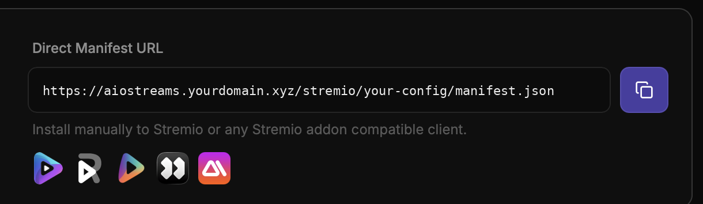
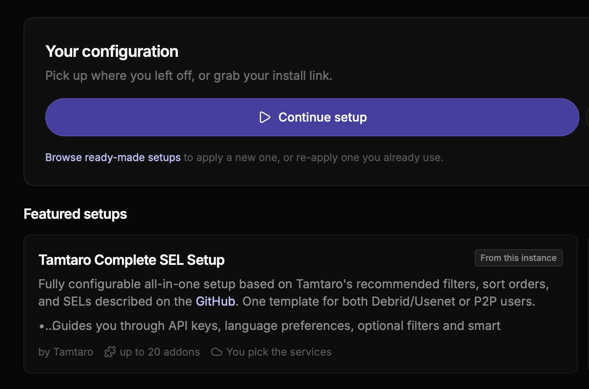
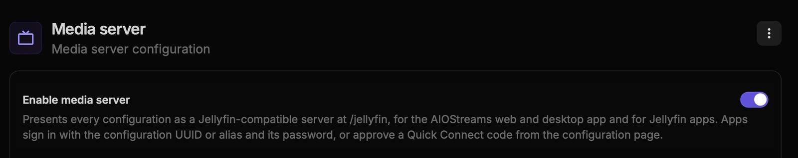
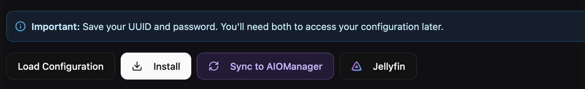
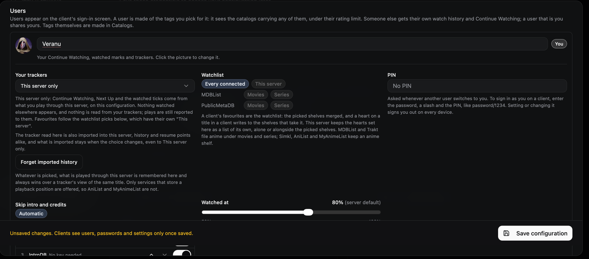
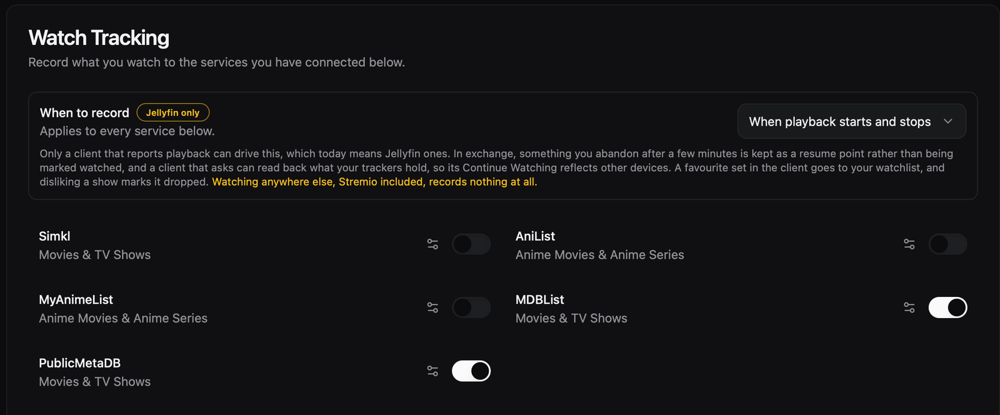
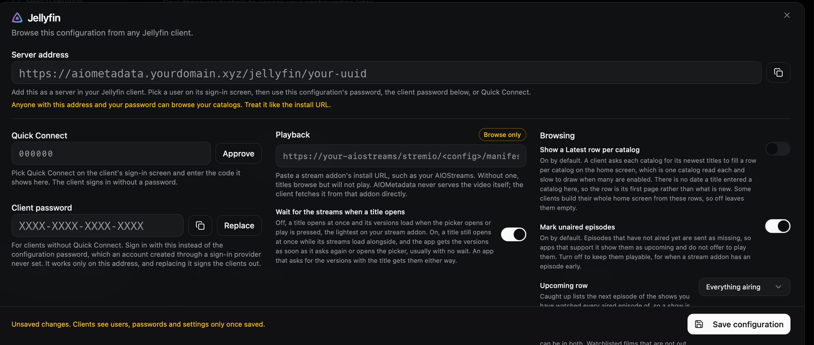
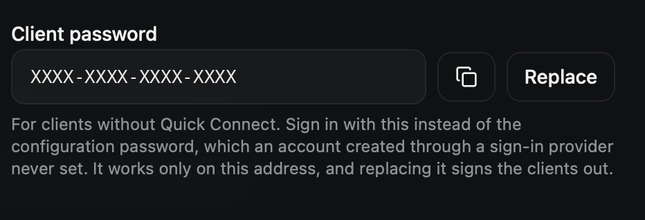

Connect your Jellyfin app to AIOStreams and AIOMetadata
This guide turns your catalogs and streams into a "Jellyfin server" you can add to any Jellyfin-compatible app, complete with artwork and watch history.
Overview
Your app normally talks to a Jellyfin media server. AIOMetadata can act as one: it provides the catalogs and details (titles, posters, descriptions), and when you press play it asks AIOStreams for the streams. By the end you'll have three things:
Choose your route
Click a route and the guide will only show the steps you need.
Steps
Create your AIOStreams config and copy the link
AIOStreams decides where your streams come from.
Public instance: open one of these public instances:
Selfhosted: open your own instance, for example aiostreams.yourdomain.xyz.
Set everything up the way you like. Then go to Save & Install and copy the manifest URL (your configuration link). Keep it handy; you'll need it in step .


Enable the media server
Selfhosted onlyCheck if the Jellyfin feature is enabled on your instance. Go to aiometadata.yourdomain.xyz/dashboard, open Settings, search for "media server" and turn on Enable media server.

Using a public instance? Those already have this enabled, so skip this step.
Set up AIOMetadata and open the Jellyfin option
AIOMetadata provides the catalogs and all the info you see in the app.
Public instance: open one of these public instances (each works as a fully enabled Jellyfin server):
Selfhosted: open your own instance, for example aiometadata.yourdomain.xyz.
Choose your metadata and catalogs (one of the default presets is a fine starting point). Then go to the configuration section and click the Jellyfin option.

Paste your AIOStreams link under playback
The Jellyfin screen has a Playback section. Paste the manifest URL from step there. This tells AIOMetadata where to fetch streams when you hit play.

Create a user
Here you create your username. You'll use it to log in to your Jellyfin app, and it keeps track of what you've watched.

- It's recommended to set Your trackers to This server only.
- With Watched at you choose when something counts as watched, for example at 80%.
- You can upload a profile picture here, which can be used as the user picture in compatible Jellyfin apps.
Choose how your watch history is tracked
The watch tracker decides where your app remembers what you've watched, and what shows up under "Continue watching".
- This server only (recommended when self-hosting): your watch history is stored in AIOMetadata's own database.
- MDBList, Simkl or another service: also works. Make sure that service is connected to your config and enabled in the General section, and turn on syncing when playback starts and stops.

Copy your server address
In the Server address section you'll find the link to your personal Jellyfin server. Copy it. You now have all three details.

Connect the server in your app
Open your Jellyfin-compatible app. It's often under Library → Add a Server; choose Jellyfin as the type. Fill in:
- Server address: the link from step
- Username: the name from step
- Password: the password you use to log in to your AIOMetadata config. You can also log in with the client password shown in the Jellyfin screen of your AIOMetadata config.


Save the connection. The app will fetch your catalogs, artwork and watch history. Once the first scan finishes, you're ready to watch.